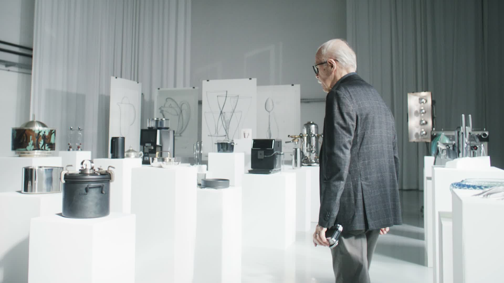
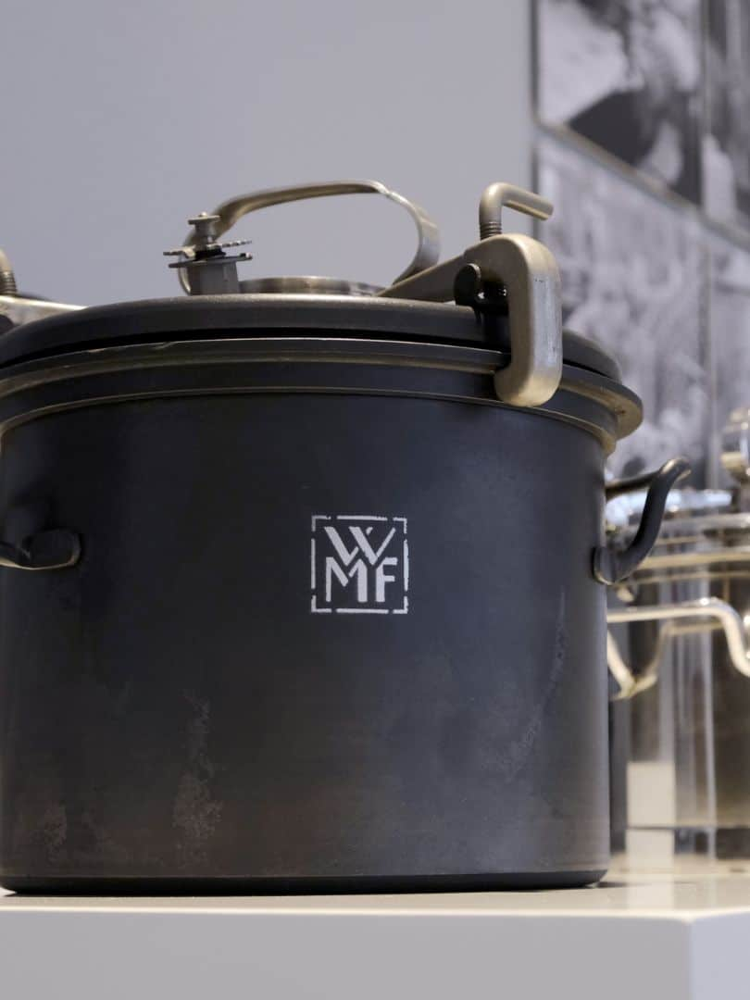
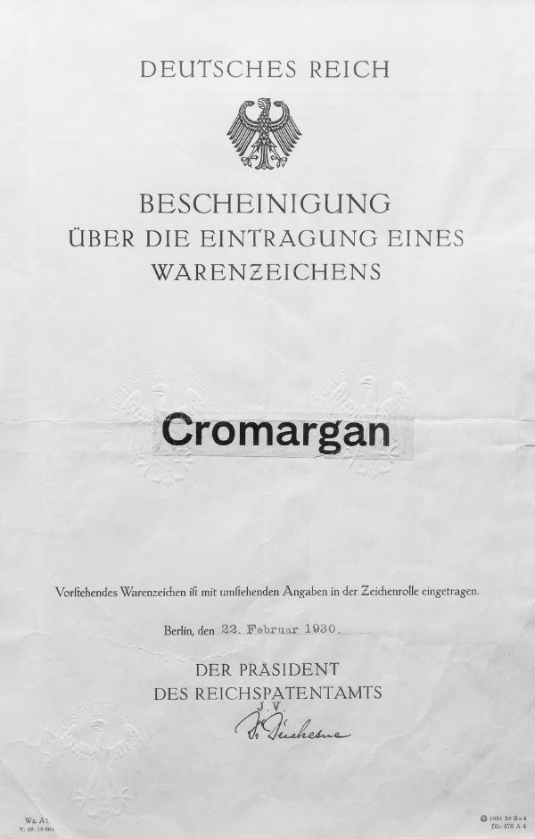

<meta charset="utf-8">
<meta name="viewport" content="width=device-width, initial-scale=1, viewport-fit=cover">
<title>WMF Heritage Page Proposal</title>
<meta name="claude:viewport-fit-sides" content="cover">
<style>
@font-face { font-family:"WMF Rotis"; src:url("assets/fonts/rotis-ii-sans-w01.woff2") format("woff2"); font-weight:400; font-display:swap; }
@font-face { font-family:"WMF Rotis"; src:url("assets/fonts/rotis-ii-sans-w01-italic.woff2") format("woff2"); font-weight:400; font-style:italic; font-display:swap; }
@font-face { font-family:"WMF Rotis"; src:url("assets/fonts/rotis-ii-sans-w01-bold.woff2") format("woff2"); font-weight:700; font-display:swap; }

/* Layout: one reading column (760) with wide tables; WMF black/white/cool grey with the eCommerce gold as the only accent */
:root {
  --bg: #ffffff;
  --fg: #111111;
  --muted: #5a5c61;
  --rule: #d7d6d4;
  --panel: #f4f4f3;
  --accent: #d7c878;      /* WMF yellow light */
  --accent-ink: #6b5c10;
  --signature: #2f4c5b;   /* Pantone 4161 C */
  --flag: #a4262c;
  --type: "WMF Rotis", "Rotis II Sans W01", "Segoe UI", system-ui, sans-serif;
  --mono: ui-monospace, "SF Mono", Menlo, Consolas, monospace;
}
@media (prefers-color-scheme: dark) { :root:not([data-theme="light"]) { --bg:#141414; --fg:#efeeeb; --muted:#a9a8a4; --rule:#333331; --panel:#1d1d1c; --accent:#d7c878; --accent-ink:#e4d68f; --signature:#8fb3c4; --flag:#ff8a8f; color-scheme: dark; } }
:root[data-theme="dark"] { --bg:#141414; --fg:#efeeeb; --muted:#a9a8a4; --rule:#333331; --panel:#1d1d1c; --accent:#d7c878; --accent-ink:#e4d68f; --signature:#8fb3c4; --flag:#ff8a8f; color-scheme: dark; }

* { box-sizing: border-box; }
body { background: var(--bg); color: var(--fg); font-family: var(--type); font-size: 17px; line-height: 1.55; margin: 0; padding-left: max(16px, env(safe-area-inset-left, 0px)); padding-right: max(16px, env(safe-area-inset-right, 0px)); -webkit-font-smoothing: antialiased; }
main { max-width: 1080px; margin: 0 auto; padding-block: 48px 96px; }
.col { max-width: 760px; }
a { color: inherit; text-underline-offset: 3px; }
a:hover { color: var(--accent-ink); }
:focus-visible { outline: 2px solid var(--accent); outline-offset: 3px; }
h1, h2, h3 { font-weight: 400; text-wrap: balance; }
h1 { font-size: clamp(34px, 5vw, 52px); line-height: 1.12; letter-spacing: .14em; text-transform: uppercase; margin: 10px 0 18px; }
h2 { font-size: clamp(22px, 3vw, 28px); line-height: 1.25; letter-spacing: .14em; text-transform: uppercase; margin: 0 0 18px; }
h3 { font-size: 19px; font-weight: 700; margin: 28px 0 8px; }
.kicker { font-size: 13px; letter-spacing: .18em; text-transform: uppercase; color: var(--muted); }
.lede { font-size: 20px; line-height: 1.5; }
section { padding-top: 56px; margin-top: 56px; border-top: 1px solid var(--rule); }
p { margin: 0 0 14px; }
ul, ol { margin: 0 0 14px; padding-left: 22px; }
li { margin-bottom: 6px; }
li::marker { color: var(--muted); }
.meta { display: flex; flex-wrap: wrap; gap: 8px 24px; font-size: 14px; color: var(--muted); margin-top: 22px; }

.cta-row { display: flex; flex-wrap: wrap; gap: 12px; margin-top: 28px; }
.btn { display: inline-flex; align-items: center; height: 44px; padding: 0 22px; border-radius: 999px; font-weight: 700; font-size: 15px; letter-spacing: .02em; text-transform: uppercase; text-decoration: none; border: 1px solid var(--fg); }
.btn.primary { background: var(--accent); border-color: var(--accent); color: #111; }
.btn.primary:hover { color: #111; filter: brightness(.95); }

.hero-shot { margin-top: 36px; display: grid; grid-template-columns: 2fr 1fr 1fr; gap: 8px; }
.hero-shot img { width: 100%; height: 100%; aspect-ratio: 4 / 3; object-fit: cover; display: block; background: var(--panel); }
.hero-shot figure { margin: 0; }
.hero-shot figcaption { font-size: 12px; color: var(--muted); margin-top: 4px; }

.verdict { display: grid; grid-template-columns: repeat(2, minmax(0,1fr)); gap: 16px; margin-top: 8px; }
.verdict > div { background: var(--panel); padding: 20px 22px; min-width: 0; }
.verdict b { display: block; font-size: 13px; letter-spacing: .14em; text-transform: uppercase; color: var(--muted); font-weight: 400; margin-bottom: 6px; }

.tablewrap { overflow-x: auto; margin: 16px 0 8px; border-top: 2px solid var(--fg); }
table { border-collapse: collapse; width: 100%; min-width: 760px; font-size: 15px; line-height: 1.45; }
th, td { text-align: left; vertical-align: top; padding: 11px 12px 11px 0; border-bottom: 1px solid var(--rule); }
th { font-size: 12px; letter-spacing: .14em; text-transform: uppercase; color: var(--muted); font-weight: 400; }
td:first-child { font-weight: 700; white-space: nowrap; }
td.num, th.num { font-variant-numeric: tabular-nums; white-space: nowrap; color: var(--muted); font-weight: 400; }
.yes { color: var(--accent-ink); font-weight: 700; }
.no { color: var(--muted); }

.mod { display: inline-block; font: 12px/1.4 var(--mono); padding: 2px 7px; border: 1px solid var(--rule); border-radius: 3px; white-space: nowrap; background: var(--panel); }
.flag { color: var(--flag); font-weight: 700; }
.chapters { display: grid; grid-template-columns: repeat(5, minmax(0, 1fr)); gap: 0; margin: 20px 0 8px; border-top: 2px solid var(--fg); }
.chapters > div { padding: 14px 14px 10px 0; border-right: 1px solid var(--rule); min-width: 0; }
.chapters > div:last-child { border-right: 0; }
.chapters .y { font-size: 13px; letter-spacing: .14em; color: var(--muted); font-variant-numeric: tabular-nums; }
.chapters .t { font-size: 18px; margin: 4px 0 6px; }
.chapters p { font-size: 14px; line-height: 1.45; color: var(--muted); margin: 0; }

.decisions { counter-reset: d; list-style: none; padding: 0; }
.decisions li { counter-increment: d; position: relative; padding: 14px 0 14px 44px; border-bottom: 1px solid var(--rule); margin: 0; }
.decisions li::before { content: counter(d); position: absolute; left: 0; top: 14px; width: 28px; height: 28px; border-radius: 50%; border: 1px solid var(--fg); display: grid; place-items: center; font-size: 14px; font-variant-numeric: tabular-nums; }
.decisions b { display: block; }

.rules { display: grid; grid-template-columns: repeat(2, minmax(0,1fr)); gap: 16px; }
.rules > div { padding: 18px 20px; border: 1px solid var(--rule); min-width: 0; }
.rules h3 { margin-top: 0; font-size: 15px; letter-spacing: .14em; text-transform: uppercase; font-weight: 400; color: var(--muted); }
.rules ul { margin: 0; }

.sources { font-size: 14px; color: var(--muted); columns: 2; column-gap: 32px; }
.sources li { break-inside: avoid; }

@media (max-width: 760px) {
  body { font-size: 16px; }
  main { padding-block: 32px 64px; }
  .hero-shot { grid-template-columns: 1fr 1fr; }
  .hero-shot figure:first-child { grid-column: 1 / -1; }
  .verdict, .rules { grid-template-columns: minmax(0,1fr); }
  .chapters { grid-template-columns: minmax(0,1fr); }
  .chapters > div { border-right: 0; border-bottom: 1px solid var(--rule); }
  .sources { columns: 1; }
}
</style>

<main>
  <header class="col">
    <span class="kicker">wmf.com · Brand page proposal · 27 Nov 2026</span>
    <h1>Our story: a heritage page for the shop</h1>
    <p class="lede">WMF has 173 years of history, a protected archive of 11,000 objects and a "Since 1853" line on its homepage, but no page on wmf.com that tells the story. This proposal recommends one, built entirely from the landing-page modules we already have.</p>
    <div class="cta-row"><a class="btn primary" href="our-story.html">Open the prototype</a><a class="btn" href="#structure">Jump to the structure</a></div>
    <div class="meta"><span>Research: WMF corporate site, 17 benchmark pages, Lagostina and 7 other Groupe SEB brands, UX and brand-heritage studies</span></div>
  </header>

  <div class="hero-shot">
    <figure><figcaption>WMF museum, from the 2023 heritage film</figcaption></figure>
    <figure><figcaption>Sicomatic, 1927</figcaption></figure>
    <figure><figcaption>Cromargan® trademark, 1930</figcaption></figure>
  </div>

  <section class="col" id="summary">
    <h2>Recommendation</h2>
    <ol>
      <li><b>Build one shop-native page, "Our story"</b> (/de/en/our-story.html, /de/de/unsere-geschichte.html), and link it from the footer, the homepage "Since 1853" band, the Masterpieces hub and the PDP brand module. Today "History" sends shoppers to a corporate site with a contact form, and "WMF Brand" opens a list of press releases.</li>
      <li><b>Lead with what people buy, and use heritage as the proof.</b> The page is organised by product world (cookware, cutlery, design classics, coffee), each with a "since" date, a short heritage hook, today's benefit and a shoppable product row. The brand line "Inspired by professionals. Designed for home." frames the page.</li>
      <li><b>Close the loop to the shop.</b> No kitchenware competitor combines a well-told history with real commerce links. That gap is WMF's to take: Cromargan®, the Perfect pressure cooker, coffee machines and the Wagenfeld designs are all still on sale.</li>
      <li><b>Keep the history short, complete and careful.</b> The full chronology becomes one swipeable timeline of six moments after the product sections, with a short, sober note on 1939–1945, which the German corporate chronicle covers and the English one leaves out. Every line and alt text follows the WMF claim rules: no "Made in Germany", no "first in the world", no superlatives.</li>
    </ol>
    <div class="verdict">
      <div><b>New components needed</b>None. 14 sections, all from live PageBuilder modules. One optional CSS change: a sticky Sub Navigation.</div>
      <div><b>Content needed</b>Mostly exists: archive photos, the 2023 heritage film, the Taste Matters film, real SKUs. Copy is drafted in the prototype.</div>
    </div>
  </section>

  <section id="wmf">
    <div class="col">
      <h2>1 · What WMF has today</h2>
      <p>The corporate history lives on <a href="https://aboutwmf.com/en/history/">aboutwmf.com</a>: an intro, the founding, a founder quote, the logo evolution, advertising posters, a tabbed timeline with about 45 entries and an archive gallery. It is written for corporate readers and has no product links.</p>
      <h3>Gaps on the shop</h3>
      <ul>
        <li>There is no heritage page on the DE or EN shop. The only on-shop history page is on the ES shop, and it is unfinished: CMS labels show as headings, the copy mixes languages, and it makes "Made in Germany" claims.</li>
        <li>The homepage band "SINCE 1853 / TASTE MATTERS" links nowhere. The EN site banner still says "170 YEARS OF PASSION FOR TASTE", three years after that anniversary.</li>
        <li>Icon products tell no story. The Cromargan® and Perfect collection pages carry one tagline each. The Wagenfeld shaker PDP never says "Max und Moritz" or "Bauhaus", and says "for over 160 years".</li>
        <li>The facts disagree between sources: 160, 165 or 170 years; Cromargan protect® in 2008 or 2009; Silit acquired in 1989 or 1998. The EN logo text also mistranslates the German.</li>
        <li><b>1933–1945:</b> the German chronicle covers WMF as an armaments maker, the forced labour of more than 800 Jewish women and girls in a concentration camp sub-camp in Geislingen, and the 2015 memorial. The English page skips from 1932 to 1953.</li>
      </ul>
      <h3>Assets we can use</h3>
      <p>Archive photos with captions (Sicomatic 1927, Art Nouveau centrepiece 1904, Wagenfeld tableware, Max und Moritz, the Cromargan® certificate, the 1880 pattern book), the logo evolution graphic, the 96-second 2023 heritage film shot in the WMF museum with its director Heinz Scheiffele, and the 30-second Taste Matters film. The archive was declared a cultural monument in 2019, and the 2026 Lufthansa cutlery re-edition shows that heritage products already sell.</p>
    </div>
  </section>

  <section id="benchmark">
    <div class="col">
      <h2>2 · Competitor benchmark</h2>
      <p>17 heritage pages, read section by section. Most kitchenware brands either tell the story well or link to products. None does both.</p>
    </div>
    <div class="tablewrap">
      <table>
        <thead><tr><th>Brand</th><th>Format</th><th>Timeline</th><th>Shop links</th><th>What to take from it</th></tr></thead>
        <tbody>
          <tr><td>Fissler</td><td>About page + one-off anniversary pages (180 years, 70 years of pressure cooking)</td><td class="no">None</td><td class="yes">Priced carousel, staff picks, retro re-editions</td><td>The best commerce link in kitchenware. Thin on real history; leans on "Made in Germany", which WMF can't copy.</td></tr>
          <tr><td>Zwilling</td><td>Two magazine pages</td><td>20-entry slider, 1731–2021</td><td class="no">Category links only</td><td>Timeline copy names icons (FOUR STAR, FRIODUR) but never links them.</td></tr>
          <tr><td>Le Creuset</td><td>Short hub + Craft sub-page</td><td class="no">One date</td><td class="no">Tiles to sub-pages</td><td>Clean hub and spoke; one signature asset (Volcanic) carries the story.</td></tr>
          <tr><td>Villeroy &amp; Boch</td><td>Corporate timeline (~55 entries)</td><td>Zig-zag, century chapters, sticky nav</td><td class="no">None</td><td>Good navigation; covers the wars honestly. Parked off-shop, like WMF today.</td></tr>
          <tr><td>Mauviel 1830</td><td>One page, 8 sections</td><td>4 numbered chapters</td><td class="yes">Material cards → shop</td><td>The best compact template: stat strip, chapters, "what we make today", FAQ, two exits to the shop.</td></tr>
          <tr><td>Alessi</td><td>One page, 11 decades</td><td>One block per decade</td><td class="no">Zero links</td><td>Elegant decade structure; a dead end commercially.</td></tr>
          <tr><td>Georg Jensen</td><td>Explore hub + story</td><td class="no">None</td><td class="yes">Every designer or icon tile is a PLP</td><td>Designers and icons as the way into the shop.</td></tr>
          <tr><td>Rösle, All-Clad, Staub</td><td>Short about pages</td><td class="no">None</td><td>Some CTAs</td><td>Founder-as-character stories (Rösle's widow Viktoria, All-Clad's "Man of Metal").</td></tr>
          <tr><td>Robbe &amp; Berking</td><td>~40 entries, 3 era anchors</td><td>Vertical list</td><td>A few entry links</td><td>A founder motto as a brand promise; manufactory tours as the pay-off.</td></tr>
          <tr><td>Rimowa</td><td>Immersive single page</td><td>~10 visual moments</td><td class="no">None</td><td>"Design codes": history turned into details you can see on today's product. Heavy scroll animation is a mobile risk.</td></tr>
          <tr><td>Montblanc</td><td>Meisterstück 100 icon page</td><td>Year tabs</td><td class="yes">Shoppable re-edition carousel</td><td>The model for WMF icon pages: an icon's biography, its anatomy, the shop, then care.</td></tr>
          <tr><td>Miele</td><td>Very long decade page</td><td>Decade anchors</td><td class="no">None</td><td>A dedicated, researched chapter on the Nazi era. The precedent for WMF.</td></tr>
          <tr><td>Barbour, Smeg</td><td>Long single pages</td><td>26 cards / 24-year slider</td><td class="no">None</td><td>Longevity services (repair, re-wax) as heritage; design collaborations as the spine.</td></tr>
        </tbody>
      </table>
    </div>
    <div class="col">
      <h3>Patterns to copy</h3>
      <ul>
        <li><b>"Since 1853" in the hero</b>, the opener nearly every brand uses.</li>
        <li><b>Chapters with a theme and a jump bar</b> (Alessi, Miele, V&amp;B), capped at 3–5 items each.</li>
        <li><b>A stat strip and an FAQ</b> (Mauviel).</li>
        <li><b>Icon biographies with a shop module</b> (Montblanc, Fissler).</li>
        <li><b>Design codes and archive objects</b> as the visuals (Rimowa).</li>
        <li><b>Longevity through service</b> (Barbour, Miele).</li>
      </ul>
      <h3>Anti-patterns</h3>
      <ul>
        <li>Long lists of entries that all carry the same weight.</li>
        <li>No route back to products.</li>
        <li>Heritage parked on a corporate site.</li>
        <li>Placeholder alt text.</li>
        <li>Scroll-jacking.</li>
        <li>Origin-claim framing.</li>
      </ul>
    </div>
  </section>

  <section id="lagostina" class="col">
    <h2>3 · How Lagostina did it</h2>
    <p>Lagostina's <a href="https://www.lagostina.it/corporate/la-nostra-storia">La nostra storia</a> (rebuilt September 2026) is one long page of era chapters (1901–1932 through 2005–today). Each era is an alternating image-and-text row followed by a six-image mosaic, on bands of rotating colour. Founders and named people carry the story: Emilio taking over at 24, Adele as chair in 1948, the first worker hired in 1901.</p>
    <p>The commercial and craft weight sits on three sister pages under a "Scopri" menu: the Omegna factory (with a hero film, collection links and a production carousel), stainless steel, and the pressure cooker. Anniversaries became campaigns:</p>
    <ul>
      <li>120 years in 2021: a new Icona line, a postage stamp and a factory photo shoot that the site still uses.</li>
      <li>125 years in 2026, in Canada: 125 pans for 125 home cooks, and a limited anniversary skillet.</li>
    </ul>
    <h3>What didn't work</h3>
    <ul>
      <li>The story page itself has no product links and no "continue exploring".</li>
      <li>It lost the archive captions, the 1960s ads and the designer credits of the older lagostina.com version.</li>
      <li>Its subline still says "120 anni".</li>
    </ul>
    <p>The other SEB brands (Tefal, Rowenta, Krups, Moulinex) run a different platform with a "key dates" accordion and "Did you know?" cards. There is no shared SEB heritage template to adopt.</p>
    <h3>What we take for WMF</h3>
    <ul>
      <li>A small hub (story page + icon pages) rather than one monolith.</li>
      <li>Era chapters built from reusable rows.</li>
      <li>Named people and captioned archive objects.</li>
      <li>Shop links at the end of every chapter.</li>
      <li>The anniversary year kept out of evergreen copy.</li>
      <li>A plan to turn 2028, WMF's 175th anniversary, into a campaign the page can host.</li>
    </ul>
  </section>

  <section id="evidence" class="col">
    <h2>4 · Other research</h2>
    <h3>Do shoppers read brand stories?</h3>
    <p>Baymard found that 62% of users on small-catalogue D2C sites opened pages like "About us" or "Our story", and some read the story before any product. Origin, founders and how products are made help users accept higher prices. NN/g's About-us guidelines ask for a 1–2 paragraph summary first, real photos rather than stock, and no walls of text.</p>
    <h3>Does heritage sell?</h3>
    <p>Experiments link "Since…" cues to higher prices consumers will pay (Baumert &amp; de Obesso 2021). Heritage raises perceived quality (Pecot et al. 2018) and builds credibility, which helps in a crisis (Zhang et al. 2019).</p>
    <p>The counterweight: in fast-moving categories old brands read as "consistent" rather than "exciting" (Kim &amp; Srivastava 2024). That matters for coffee machines and electrics, so the page pairs heritage with innovation.</p>
    <h3>What people search for</h3>
    <ul>
      <li>Founding: wann gegründet, wofür steht WMF, WMF 1853.</li>
      <li>Ownership: wer gehört WMF, gehört WMF zu Tefal / SEB.</li>
      <li>Icons: Cromargan, Fächermuster, Jugendstil, vintage, the logo.</li>
      <li>Origin, heavily: WMF made in Germany / China, wo wird WMF hergestellt.</li>
      <li>Reputation: is WMF a good brand.</li>
    </ul>
    <p>These come from autocomplete; volumes need an SEO tool. The FAQ and summary answer them in short, quotable sentences. The origin answer is the one Legal must word.</p>
    <h3>Timeline and accessibility</h3>
    <ul>
      <li>Vertical scrolling gets far more attention than horizontal, so the main story runs vertically through the product sections. The six-moment timeline is a secondary, swipeable summary.</li>
      <li>Carousels stay at five items or fewer, with arrows, peeking cards and no auto-rotate.</li>
      <li>The hero video needs a pause control (WCAG 2.2.2) and a still under reduced motion.</li>
      <li>The brand film needs captions and a transcript.</li>
      <li>Under the German Accessibility Strengthening Act (BFSG), WCAG 2.1 AA is the floor.</li>
    </ul>
  </section>

  <section id="structure">
    <div class="col">
      <h2>5 · Proposed structure</h2>
      <p>A marketing-led page: four product worlds, each a heritage hook (Text + Image) followed by a shoppable Product Slider, then the brand film, a short history timeline, service and an FAQ. Every module below is live on wmf.com today; the prototype labels each one and explains its purpose.</p>
    </div>
    <div class="chapters">
      <div><span class="y">since 1927</span><div class="t">Cookware</div><p>Sicomatic 1927, Perfect 1984, Cromargan® pots and pans. Shop: Perfect, Iconic, Gourmet Plus.</p></div>
      <div><span class="y">since 1932</span><div class="t">Cutlery</div><p>Cromargan® 1930, first cutlery 1932, Cromargan protect®. Shop: Boston, Neo.</p></div>
      <div><span class="y">since 1954</span><div class="t">Design classics</div><p>Wagenfeld, Max und Moritz, the 2026 Lufthansa re-edition. Shop: Wagenfeld, Lufthansa.</p></div>
      <div><span class="y">since 1927</span><div class="t">Coffee</div><p>Café and hotel machines since 1927, WMF Perfection for home. Shop: Perfection, Kult.</p></div>
      <div><span class="y">1853–today</span><div class="t">Our history</div><p>Six moments: 1853, 1880, 1904, 1930, 1984, 2019, plus a short note on 1939–1945.</p></div>
    </div>
    <div class="tablewrap">
      <table>
        <thead><tr><th class="num">#</th><th>Module (live)</th><th>Content</th><th>Job</th></tr></thead>
        <tbody>
          <tr><td class="num">01</td><td><span class="mod">Stage · video slide</span></td><td>"Since 1853", loop from the heritage film; "Shop our icons" and "Watch the film"</td><td>The "Since" signal, with a shop CTA first</td></tr>
          <tr><td class="num">02</td><td><span class="mod">Text · Centered</span></td><td>"Inspired by professionals. Designed for home." in two sentences</td><td>Brand promise up front</td></tr>
          <tr><td class="num">03</td><td><span class="mod">Sub Navigation + Anchor</span></td><td>Chips: Cookware since 1927 · Cutlery since 1932 · Design classics · Coffee since 1927 · Our history · FAQ</td><td>Shop-led jump bar; sticky as a CSS enhancement</td></tr>
          <tr><td class="num">04–05</td><td><span class="mod">Text + Image</span> <span class="mod">Product Slider</span></td><td>"Under pressure since 1927"; "Cook with the classics" (Perfect Plus, Perfect Premium, Iconic set, Fusiontec, Gourmet Plus)</td><td>Heritage hook → shop</td></tr>
          <tr><td class="num">06–08</td><td><span class="mod">Text + Image</span> <span class="mod">Text + Image</span> <span class="mod">Product Slider</span></td><td>"Cromargan® on the table"; "Design that stays on the table"; "Set the table" (Boston, Neo, Wagenfeld, Lufthansa re-edition)</td><td>Design code and icons as products</td></tr>
          <tr><td class="num">09–10</td><td><span class="mod">Text + Image</span> <span class="mod">Product Slider</span></td><td>"From the café counter to your kitchen"; "Coffee at home" (Perfection 680, 890L, 770, Kult)</td><td>Professional proof for the highest-value category</td></tr>
          <tr><td class="num">11</td><td><span class="mod">Video</span></td><td>Taste Matters film, with transcript</td><td>Emotional payoff</td></tr>
          <tr><td class="num">12</td><td><span class="mod">Highlights · 6 cards</span></td><td>"Our history at a glance": 1853 · 1880 · 1904 · 1930 · 1984 · 2019, plus a short text on 1939–1945 and a link to the full chronicle</td><td>The story, short and complete</td></tr>
          <tr><td class="num">13</td><td><span class="mod">Marketing Banner</span></td><td>"Keep it in use": spare parts and service</td><td>Longevity without a durability claim</td></tr>
          <tr><td class="num">14</td><td><span class="mod">FAQ · Collapse</span></td><td>Founded? What does WMF stand for? What is Cromargan®? Spare parts? Who owns WMF? Where are products made?</td><td>Search and AI answers; plus AboutPage / Organization schema</td></tr>
        </tbody>
      </table>
    </div>
    <div class="cta-row"><a class="btn primary" href="our-story.html">Open the prototype</a><a class="btn" href="our-story.html?notes=0">View it without notes</a><a class="btn" href="our-story-v1.html">Earlier chronological version</a></div>
  </section>

  <section id="rules">
    <div class="col"><h2>6 · Copy rules for this page</h2></div>
    <div class="rules">
      <div><h3>Use</h3><ul><li>"Founded in 1853 in Geislingen"</li><li>"Inspired by professionals. Designed for home."</li><li>Cromargan® and Cromargan protect® with ®</li><li>Benefit plus proof: a "since" date, then what it means in your kitchen</li><li>Named people, dated objects, real captions as alt text</li></ul></div>
      <div><h3>Avoid</h3><ul><li>"Made in Germany" / "German quality" origin claims</li><li>"First in the world", "No. 1", "only", "maximum" (all present in corporate copy today)</li><li>18/10, "durable", "lasts a lifetime"</li><li>Year counts in evergreen copy ("170 years")</li><li>Stock photos and placeholder alt text</li></ul></div>
    </div>
  </section>

  <section id="decisions" class="col">
    <h2>7 · Decisions needed</h2>
    <ol class="decisions">
      <li><b>1939–1945: wording and placement</b>Corporate Communications to approve. The proposal is a short, sober text under the history timeline, with no images or products, linking to the full chronicle. Leaving the period out would repeat the gap on the English corporate page.</li>
      <li><b>"Where are WMF products made?"</b>This is the most-searched origin question. Legal to word a factual answer without a "Made in" claim.</li>
      <li><b>Facts that conflict</b><ul><li>Cromargan protect®: 2008 or 2009?</li><li>Silit acquisition: 1989 or 1998?</li><li>Current patent count.</li><li>The "11,000 pieces" archive figure.</li></ul>The WMF archive should confirm each, and then the corporate pages should be corrected too.</li>
      <li><b>Film</b>Re-cut the 2023 heritage film without the "170 years" end card, add captions, and make a 9:16 version for mobile.</li>
      <li><b>Image rights</b>Archive images and films come from aboutwmf.com. Confirm their use on the shop. The Diane Kruger 2022 campaign image was left out on purpose.</li>
      <li><b>Product picks</b>Merchandising to choose the lead product in each row and confirm which pans count as Cromargan®.</li>
      <li><b>URL and navigation</b>Confirm the "Our story" slug, and the footer change that replaces "WMF Brand" (a press-release list) with the new page.</li>
    </ol>
  </section>

  <section id="next" class="col">
    <h2>8 · Roadmap and measurement</h2>
    <h3>Phases</h3>
    <ul>
      <li><b>Phase 1 (this page):</b> DE and EN, the footer link, a link from the homepage "Since 1853" band, and a link back from the Wagenfeld, Perfect and Cromargan® PDPs.</li>
      <li><b>Phase 2, icon pages:</b> Cromargan®, pressure cookers and coffee machines, each following the Montblanc pattern (key years, anatomy, shop module, care).</li>
      <li><b>Phase 3, 175 years in June 2028:</b> an anniversary re-edition from the archive, a "your WMF story" UGC campaign and an updated film. The page hosts it without being rebuilt.</li>
    </ul>
    <h3>KPIs</h3>
    <ul>
      <li>Click-through from the page's product modules to PDPs and PLPs (the primary KPI).</li>
      <li>Path to add-to-cart.</li>
      <li>Chip and FAQ interactions.</li>
      <li>Scroll depth at 25, 50, 75 and 90%.</li>
      <li>Video starts and completions.</li>
      <li>Organic entrances for the heritage queries.</li>
      <li>To show cause rather than self-selection: an A/B test of the story module on PDPs.</li>
    </ul>
  </section>

  <section id="sources" class="col">
    <h2>Sources</h2>
    <ul class="sources">
      <li><a href="https://aboutwmf.com/en/history/">aboutwmf.com history (EN)</a> and <a href="https://aboutwmf.com/de/unternehmen/historie/">(DE)</a></li>
      <li><a href="https://aboutwmf.com/en/stories-en/taste-matters/">Taste Matters story</a></li>
      <li><a href="https://aboutwmf.com/de/stories/170-years-of-passion-for-taste-gewachsene-erfahrung-und-leidenschaft-fuer-innovation/">170 years story (2023)</a></li>
      <li><a href="https://www.wmf-professional.com/blog/cromarganr-a-success-story.html">Cromargan® – a success story</a></li>
      <li><a href="https://www.wmf.com/es/es/wmf/nuestra-historia.html">ES shop: Nuestra historia</a></li>
      <li><a href="https://www.lagostina.it/corporate/la-nostra-storia">Lagostina: La nostra storia</a></li>
      <li><a href="https://www.lagostina.com/en/history">Lagostina legacy history</a></li>
      <li><a href="https://fissler.com/en/pages/180-years-fissler">Fissler 180 years</a></li>
      <li><a href="https://www.zwilling.com/us/about-us/our-story/article-about-us-zwilling-group.html">Zwilling company history</a></li>
      <li><a href="https://www.lecreuset.co.uk/en_GB/our-heritage/cop007.html">Le Creuset heritage</a></li>
      <li><a href="https://www.villeroyboch-group.com/de/unternehmen/unsere-geschichten/von-damals-bis-heute.html">Villeroy &amp; Boch history</a></li>
      <li><a href="https://mauviel-usa.com/pages/about-mauviel-1830s-history">Mauviel 1830 history</a></li>
      <li><a href="https://alessi.com/pages/history">Alessi history</a></li>
      <li><a href="https://www.georgjensen.com/en-gb/explore">Georg Jensen explore</a></li>
      <li><a href="https://www.rimowa.com/gb/en/heritage">Rimowa heritage</a></li>
      <li><a href="https://www.miele.com/en/c/miele-history-3696.htm">Miele history</a></li>
      <li><a href="https://www.barbour.com/gb/our-history.html">Barbour history</a></li>
      <li><a href="https://www.tefal.fr/histoire">Tefal histoire</a></li>
      <li><a href="https://www.nngroup.com/articles/about-us-information-on-websites/">NN/g: About Us information</a></li>
      <li><a href="https://baymard.com/blog/dtc-users-informational-needs">Baymard: D2C informational needs</a></li>
      <li><a href="https://ideas.repec.org/a/eee/jbrese/v123y2021icp241-254.html">Baumert &amp; de Obesso 2021</a></li>
      <li><a href="https://ideas.repec.org/a/eee/jbrese/v85y2018icp304-316.html">Pecot et al. 2018</a></li>
      <li><a href="https://www.ama.org/research-insights/when-do-consumers-prefer-newer-brands-over-old-ones/">Kim &amp; Srivastava 2024</a></li>
      <li><a href="https://www.nngroup.com/articles/scrolljacking-101/">NN/g: Scrolljacking</a></li>
      <li><a href="https://www.w3.org/WAI/WCAG22/Understanding/pause-stop-hide.html">WCAG 2.2.2 Pause, Stop, Hide</a></li>
      <li><a href="https://developers.google.com/search/docs/appearance/structured-data/organization">Google: Organization structured data</a></li>
    </ul>
  </section>
</main>
